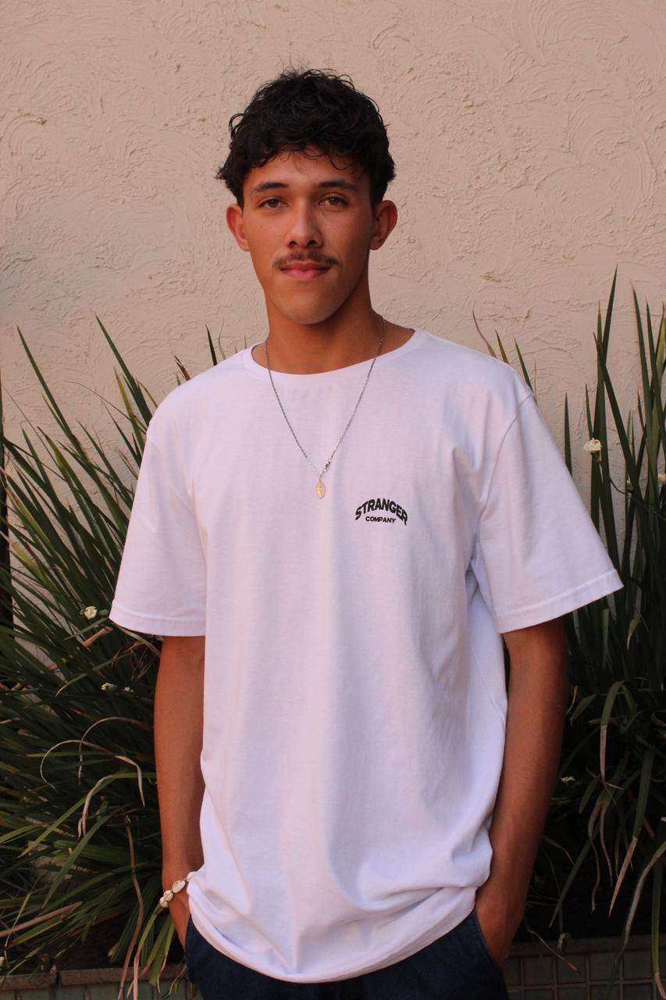

Sobre o FinUp
O FinUp é um simulador financeiro pessoal desenvolvido com o objetivo de empoderar iniciantes no controle de suas finanças. Nossa missão é simplificar a gestão financeira, tornando-a acessível e compreensível para todos. Ele foi desenvolvido de jovens, para jovens que soferm na hora de se estabelecer financeiramente. De uma forma leve e descontraída, buscamos ajudar nossos usuários a tomarem decisões financeiras mais informadas e seguras.
Nossa Equipe e Divisão de Tarefas

Ruan Pablo Viana
Tarefa: Estruturação das páginas em HTML, e implementação de estilos CSS.
Bianca Serafim
Tarefa: Pesquisas para o desenvolvimento do projeto e apoio na estruturação e implementação de estilos CSS.